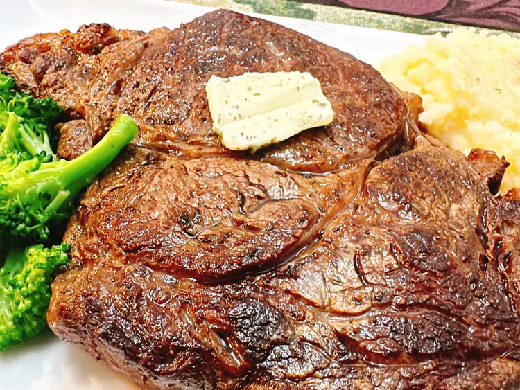

Home
Butter-basted Steak

Description
This butter-basted ribeye steak is an
indulgent dish that is date night-worthy,
perfect for company, and very easy to prepare. Use a high-quality herb butter for the best flavor.
Ingredients
- 1 (1 pound) rib eye steak
- salt and freshly ground pepper to taste
- 2 Tablespoons garlic and herb salted butter (such as Kerrygold®), plus more for serving (optional)
Steps
-
Remove steak from package, pat dry, and place on a plate.
Refrigerate, uncovered, for 2 hours before cooking.
-
Heat a heavy skillet over medium-high heat until hot.
Sprinkle steak thoroughly with salt and pepper.
Trim off any extra fat from steak.
Place steak in skillet with fattest side down;
cook until fat is browned, about 2 minutes.
Continue cooking until steak is browned, about 2 minutes.
-
Add butter to skillet and cook until butter is browned.
Turn steak over and cook, basting with browned butter, for 2 minutes more.
Remove from skillet to a plate.
Tent with foil, and rest steak for 7 minutes to absorb juice.
Serve steak with a pat of butter.